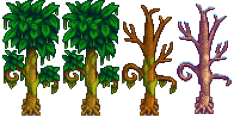
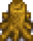
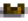
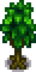
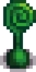
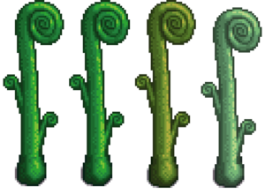

Green Rain Trees
Green Rain Trees comprise three varieties of trees that can appear during the Green Rain weather event. On the day of the Green Rain weather event, approximately 75% of trees have a chance to turn into one of the varieties of Green Rain Trees. These trees revert back to their original form on the next day.
All three types of Green Rain Trees can spawn naturally during the Green Rain event, can grow from Mossy Seeds, or can have a fully-grown Common Tree grow into one. Planted Mossy Seeds have about a 20% chance per day of growth, except in Winter when trees do not grow. If the seeds are fertilized, then Green Rain trees will grow in five days (even in Winter).[1] Each of the three Green Rain Tree varieties may spread seeds like a common tree, including the temporary trees that exist only for one day during the green rain.
When a fully grown Green Rain Tree with moss on it is placed near a Common Tree (within the 5X5 square centred on the common tree), it speeds up the time it takes for a common tree to grow or regrow its moss, provided the tree has reached at least 5th stage. The exact math is 50% chance to have an additional growth stage gain at the start of the day. This growth can only impact fully grown trees, so its only impact is on the moss growth. See Moss Growth.
In Fall, Oak Trees and Maple Trees that are not in Pelican Town or the Greenhouse may temporarily turn into Green Rain Trees Type 1 and 2, respectively, and will return to their original form the next Spring. If a tapper is placed on the tree, this change will not occur. [2]
Type 1
Some appear with Moss, while others do not. They may drop a Mossy Seed when shaken. When chopped with an axe, they drop possible Moss, Wood, Sap, possible Mossy Seeds, and possible Hardwood (if the player has the Lumberjack profession).
| Stage 1 | Stage 2 | Stage 3 | Stage 4 | Stage 5 - Spring, Summer, Fall, Winter | Stump - Spring, Summer, Fall, Winter |
|---|---|---|---|---|---|
 |
 |
Type 2
Some appear with Moss, while others do not. They may drop a Mossy Seed when shaken. When chopped with an axe, they drop possible Moss, Wood, Sap, possible Mossy Seeds, and possible Hardwood (if the player has the Lumberjack profession).
| Stage 1 | Stage 2 | Stage 3 | Stage 4 | Stage 5 - Spring, Summer, Fall, Winter | Stump - Spring, Summer, Fall, Winter |
|---|---|---|---|---|---|
 |
 |
 |
Type 3
These trees cannot grow Moss. They may drop a Mossy Seed when shaken. When chopped with an axe, they drop 5 Fiddlehead Ferns plus an additional 1 Fiddlehead Fern from the stump, and up to 2 Mossy Seeds. During Winter, these trees become stumps. When tapped, each tree yields 1 Fiddlehead Fern every 2 days (except during Winter).[1]
| Stage 1 | Stage 2 | Stage 3 | Stage 4 | Stage 5 - Spring, Summer, Fall, Winter | Stump - Spring, Summer, Fall, Winter |
|---|---|---|---|---|---|
 |
 |
References
History
- 1.6: Introduced.
- 1.6.3: Adult mossy green rain trees now boost the moss growth rate of nearby trees.
| Trees | |
|---|---|
| Trees | Green Rain Trees • Mahogany Tree • Maple Tree • Mushroom Tree • Mystic Tree • Oak Tree • Palm Tree • Pine Tree |
| Fruit Trees | Apple Tree • Apricot Tree • Banana Tree • Cherry Tree • Mango Tree • Orange Tree • Peach Tree • Pomegranate Tree |
| Seeds | Acorn • Mahogany Seed • Maple Seed • Mossy Seed • Mushroom Tree Seed • Pine Cone • Mystic Tree Seed |
| Fruit | Apple • Apricot • Banana • Cherry • Mango • Orange • Peach • Pomegranate |
| Misc | Large Log • Large Stump • Tea Bush |